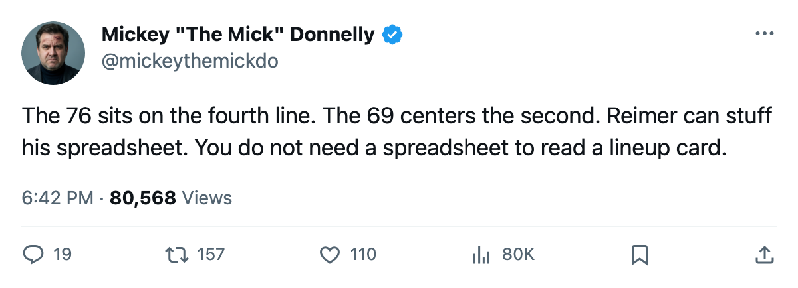
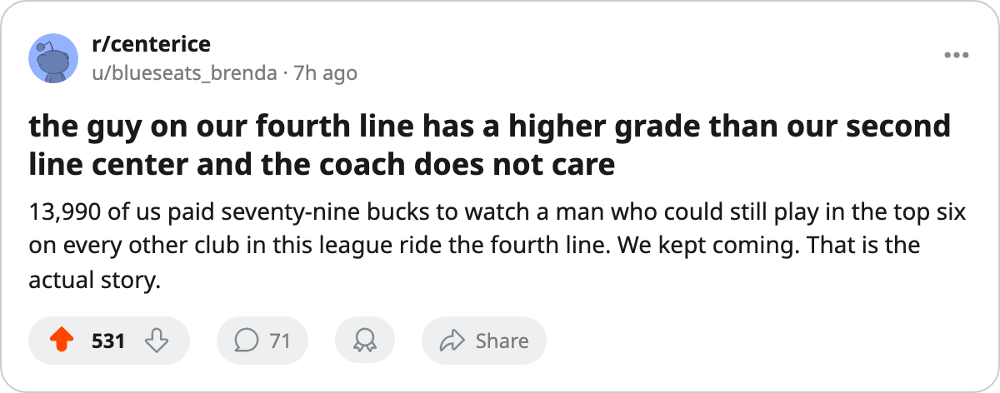

ANYONE CAN SEE THIS ONE, REIMER: THE 76 IS ON THE FOURTH LINE IN PITTSBURGH
Brian Holzinger skates L4C. Milan Kraft skates L2C. The gap is 7 points the wrong way and the club has 20 wins.
 Mickey "The Mick" DonnellyColumnist, ex-goalie · The Penalty Box
Mickey "The Mick" DonnellyColumnist, ex-goalie · The Penalty Box
Pittsburgh's coach: a 76 parks on the fourth line while a 69 runs the second

Brian Holzinger78 carries a 76 overall grade in the Bureau's Book. He skates center on the fourth line.  Milan Kraft69 carries a 69. He skates center on the second. The bench at
Milan Kraft69 carries a 69. He skates center on the second. The bench at  Pittsburgh Penguins has parked a player rated 7 points above his second-line center and called it a lineup. The club sits at 20-32-11 with 73 points in 74 games.
Pittsburgh Penguins has parked a player rated 7 points above his second-line center and called it a lineup. The club sits at 20-32-11 with 73 points in 74 games.
Pittsburgh Penguins visit  New Jersey Devils tonight, and this is what the bench sends out with the regular season closing and a 2-day-old deadline in the rearview. Nobody moved. Nobody came. The 76 still sits on L4C.
New Jersey Devils tonight, and this is what the bench sends out with the regular season closing and a 2-day-old deadline in the rearview. Nobody moved. Nobody came. The 76 still sits on L4C.
Holzinger [410] runs K1C and L4C. Kraft [514] runs L2C. A 69 on the second line means the coach trusts him over the man 7 points higher. You do not need Doug Reimer's morning column to see it. It sits on the lineup card and in the Bureau's Book. Digits.
THE MAN WHO CARRIES IT
 Mario Lemieux88 leads Pittsburgh Penguins at 106 points in 65 games, 15th in the league, at 39 years old. He carries 52 goals and 54 assists in 21.1 minutes a night. He is the second-oldest man in the top 30 and the only player on this roster who can put the puck in the net at will. When he sits, the fourth line comes on, the 76 takes the shift, and the 69 has been taking the draws on the second line all season.
Mario Lemieux88 leads Pittsburgh Penguins at 106 points in 65 games, 15th in the league, at 39 years old. He carries 52 goals and 54 assists in 21.1 minutes a night. He is the second-oldest man in the top 30 and the only player on this roster who can put the puck in the net at will. When he sits, the fourth line comes on, the 76 takes the shift, and the 69 has been taking the draws on the second line all season.
Pittsburgh's club average morale sits at 93.5, 21st of 30 on the Bureau's Morale Scale. When your fourth-line center is 7 points better than your second-line center, that second-line center does not have confidence. He has a job the coach handed him.
13,990 at $79 a night. $44.95M in payroll returning 73 points. $18.09M in profit. $0.62M per point. The owner has no reason to change a single thing. The calendar's trade deadline came and went 2 days ago. Nobody on this roster moved. The coach stays. The lineup stays.
THE COACH KNEW
A coach who cannot see a 7-point mis-slot between his second and fourth centers has a habit. And 13,990 people in $79 seats watch Mario Lemieux [572] drag a 20-win team through another season while that habit runs unchecked on the bench.
The number sits on the lineup card. The coach put it there. The coach can take it off.

